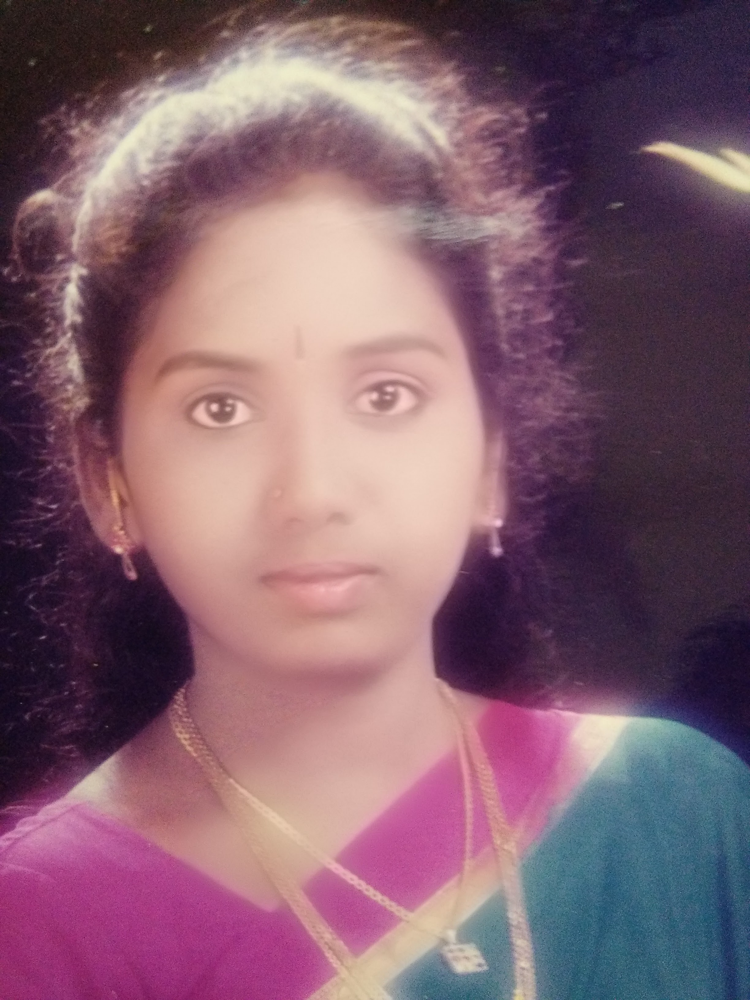
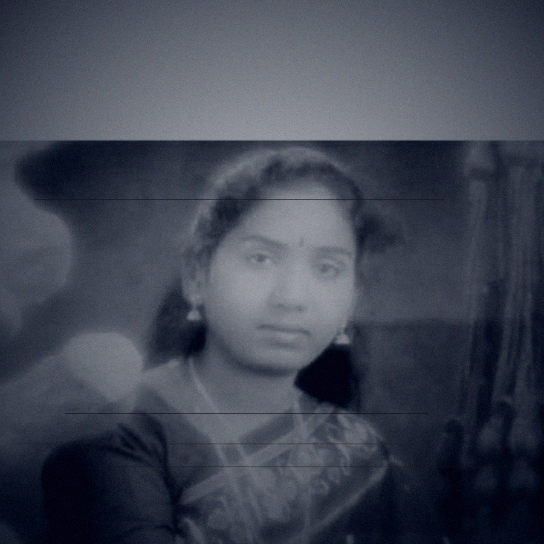
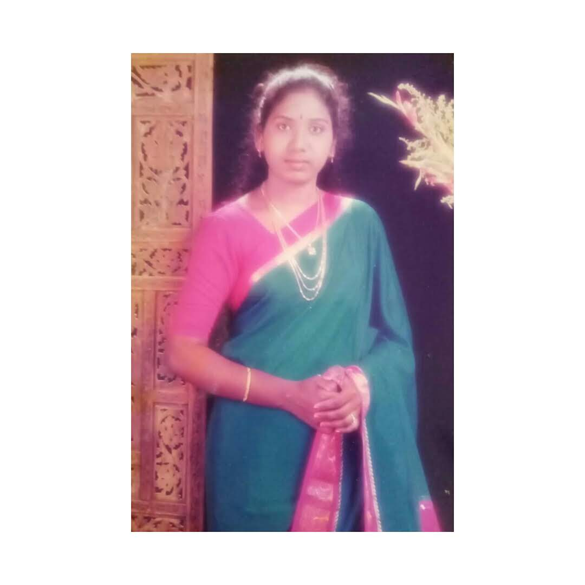
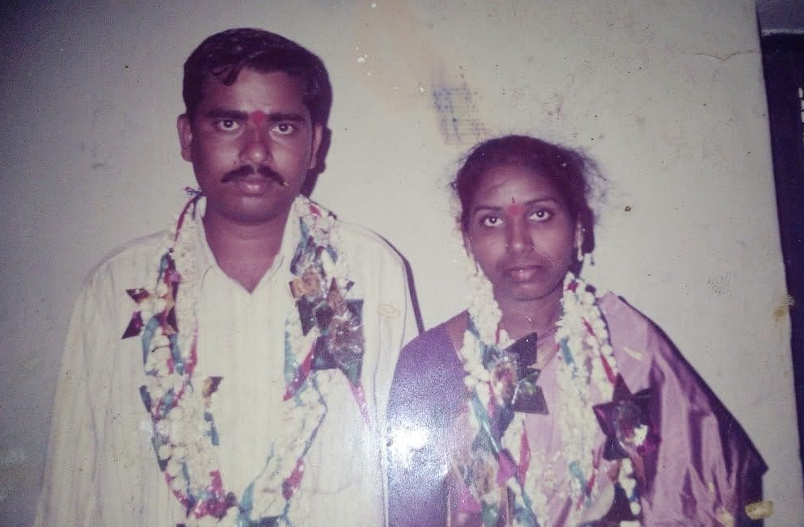
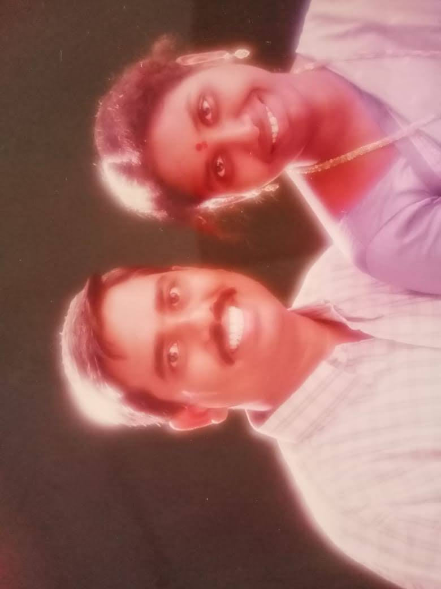
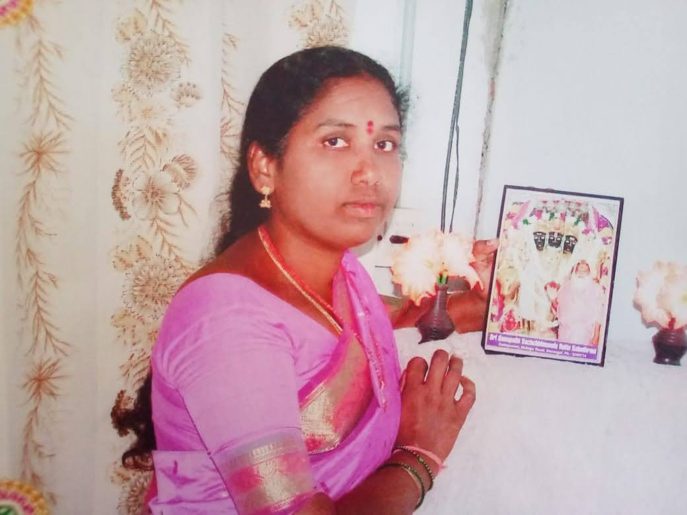
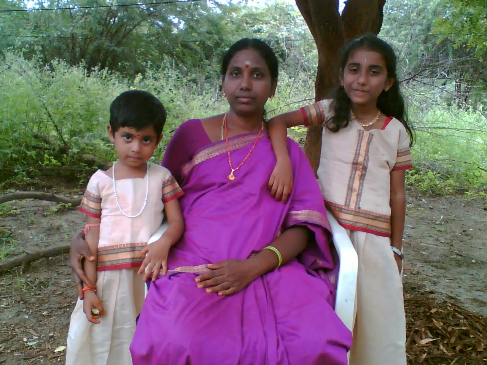
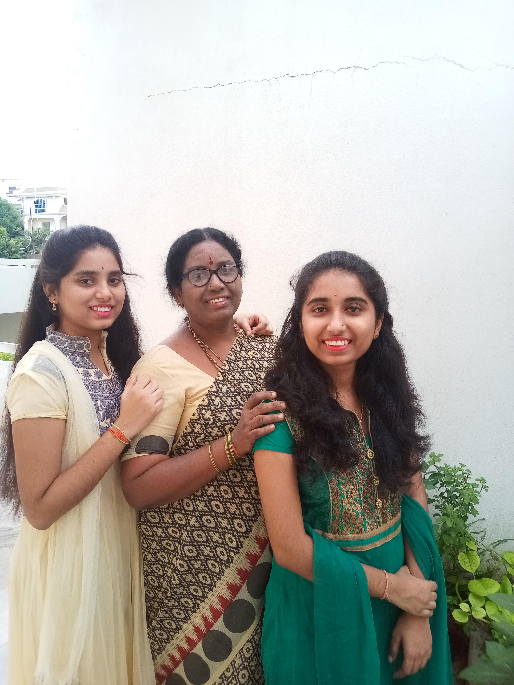
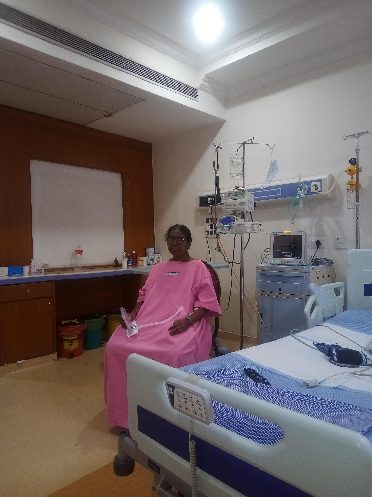

A life of quiet courage, radiant beauty, and love that never ran out.
Her Story · Her Strength · Her Light
Scroll
Chapter One
The Girl From the Small Town
She grew up ordinary in a world that didn't yet know how extraordinary she was.
In a small town in India, in a home full of brothers and the sounds of everyday life, she arrived quietly into the world. She was not the loudest, not the one who demanded the most space — she was the girl who watched and learned, who felt deeply, who carried a warmth that would take years for the world to truly recognize.
Her — when the whole world was still ahead

Four brothers, a small town, simple means — and yet she never felt small inside. She was tender and strong in the same breath, a girl who carried dreams quietly, the way all extraordinary people do before the world catches up to them.
✦ ✦ ✦
Chapter Two
The Dark Days — and the Light That Found Her
They said words meant to wound. They did not know who they were speaking to.
In her silence, she was already stronger than they knew

When the time came for marriage proposals, the neighbours — small minds in a small town — decided her skin tone was the loudest thing about her. They said she was "too dark." They said she would struggle. They turned her beauty into a wound. And for a time, she believed them.
"She went quiet. That is what cruelty does — it doesn't just hurt you, it makes you doubt the mirror."
She fell into a sadness that only those who have been told they are not enough can understand. But she did not stay there. She never stayed anywhere that didn't deserve her.
She went to the city. And the city saw her differently. Neighbours there — people who had breathed wider air — looked at her and said simply: "You are beautiful." And they meant it. No footnote. No qualification. Just the truth.
The depression lifted. Not all at once, but it lifted — like fog when the sun insists on itself.
Chapter Three
The Day She Saw Herself
A stranger with a camera told her what a hundred people had failed to say.
One afternoon in the city, she walked into a photography studio. An ordinary day, an ordinary street. She sat before the lens, perhaps still carrying the echoes of unkind words.
The photograph that knew her truth before she did

The photographer developed the pictures and looked at them. Then he did something she did not expect: he framed her photographs and placed them in his studio window. A display of beauty. Of someone worth showing to the world.
"He kept her pictures because she looked like a heroine. Because she did."
— as remembered by her daughter
In that moment, something shifted inside her. Not because a stranger validated her — but because she finally had permission to see what had always been true. The girl from the small town was, and had always been, radiant.
She came home different. Unshakeable. The neighbours could say what they wanted now. She had seen herself — really seen herself — and that knowledge was hers to keep.
✦ ✦ ✦
Chapter Four
The Man Who Never Saw Her Color
He looked at her and saw everything that mattered.
The beginning of everything

Two people, one life

When the arranged marriage proposal arrived, he came with bright, fair skin and steady eyes. He saw her and liked her. Immediately. First sight.
Years later, she asked him gently — half teasing, half needing to know — why he had chosen her, knowing what the world had said about her complexion.
"I never felt, not once, that you were dark. Colour has never mattered to me. Only the person. Only the heart inside."
— Her husband, her love
And that was that. The neighbours' voices became smaller. The old wound, at last, closed over and became scar tissue — something that marks you without hurting you anymore.
🪷
VegetarianFollowed the Guru's teachings with her whole heart
🌿
GardenerShe planted life wherever she went — flowers, food, love
🎶
SingerA voice that fills a room long after the song ends
✂️
SeamstressShe stitched beautiful clothes for her daughters by hand
Chapter Five
The Guru's Light, the Garden's Gifts
She found a path of peace — and walked it with her husband, hand in hand.
Where she found her stillness

Together, she and her husband found His Holiness Sri Ganapathy Sacchidananda Swamiji as their spiritual guide. The guru's teachings changed something in her — she gave up meat entirely, embraced a gentler way of living, and found in devotion a quiet, daily joy.
Her home became a place of growth — literally. She planted food in the soil, tended flowers that had no agenda but to bloom. She stitched dresses for her daughters with her own hands, turning cloth into love. She sang. She cooked. She made something out of almost nothing, month after month, stretching her husband's modest salary until it became enough, and then some.
They never looked poor. Not because they had money. Because she had grace.
✦ ✦ ✦
Chapter Six
The Mother — Two Beautiful Girls
She did not raise daughters. She raised women.
The beginning of her greatest chapter

Her whole heart, in one frame

First came one daughter — beautiful. Four years later, another — equally beautiful. Her family was complete.
She raised them without ever raising a hand. She raised them with books and soft voices, with homemade clothes and home-cooked meals, with the belief that education was the one thing no one could ever take away from a woman. She drove that belief into her daughters the only way she knew — by loving them completely and trusting them wholly.
"She never beat us. She never had to. Her love was enough to make us want to become better."
— Her daughter
Both daughters graduated. Both are now studying abroad for their masters degrees. She sent them into the world with everything they needed and asked for nothing in return — except that they live well and be free.
Chapter Seven
The Storm — and the Miracle
She has faced the worst that life can offer. She is still here.
Proof that she is still here. That she won.

During her daughter's B.Tech years, the illness came. What began as symptoms became a diagnosis that stole the air from the room: liver cirrhosis. The doctors spoke plainly. Only a transplant would save her.
For an entire year she suffered — with a patience and endurance that cannot be put into words, only witnessed. The family held together. Somehow, through prayer and search and the grace of a stranger's generosity, a donor was found.
"The pain she went through during this process is not explainable. It is only survivable. And she survived it."
The surgery was a success. Her new liver took. Her body, tested beyond what any body should be tested, chose to keep living. By the blessings of God and the skill of doctors and the sheer will of a woman who was not finished yet, she came through.
She calls it a second birth. She is right. And she faced even that — perhaps the most terrifying thing a person can face — and came out the other side not broken, but more whole than ever.
Chapter Eight
Now — Living, Dreaming, Shining
Her daughters are across the ocean. Her heart is everywhere they are.
Today. Strong. Peaceful. Still blooming.
Today, she lives in a village with her husband. The house is quiet in a different way now — the girls are gone to chase their futures, and she is proud of every mile of the distance. She tends her plants. She sings. She cooks meals and fills the house with the smells that will always mean home to her daughters, no matter where in the world they are standing.
She has been through everything. The small town that couldn't see her. The depression. The transplant. The loneliness of an empty nest. And she faces it all with the same quiet steadiness she has always carried.
"She is really a strong woman! She is a rockstar."
— Her daughter, who has been watching closely all along
She is, above all, a woman who loved without conditions — who gave everything and asked only that her daughters be free. That is a kind of greatness the world rarely names. But her daughters know. They always will.
A Letter From Your Daughter · Mother's Day
To the woman who made me brave by being brave first.
Amma,
You taught me what strength looks like — not the kind that shouts, but the kind that shows up every single day. The kind that stitches a dress when there is no money for the shop. The kind that plants a garden when the world feels barren. The kind that survives a surgery that should have broken someone and comes home and still makes your family feel safe.
Those neighbours who said you were not beautiful — they were wrong. They will always have been wrong. You are the kind of beautiful that does not need anyone's permission. A photographer who had seen thousands of faces put yours in his window. Your husband looked at you once and never looked away. And I have spent my whole life watching you and thinking: I want to be like her.
Thank you for never beating us when you easily could have. For cooking and singing and growing things and making a small salary feel like abundance. For sending us far away even though it must have cost you something every day. For surviving. For choosing to keep living.
I love you more than I know how to say. You are my greatest inspiration. Every single day.